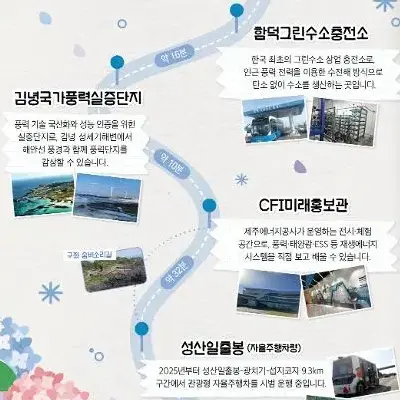
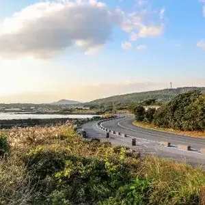
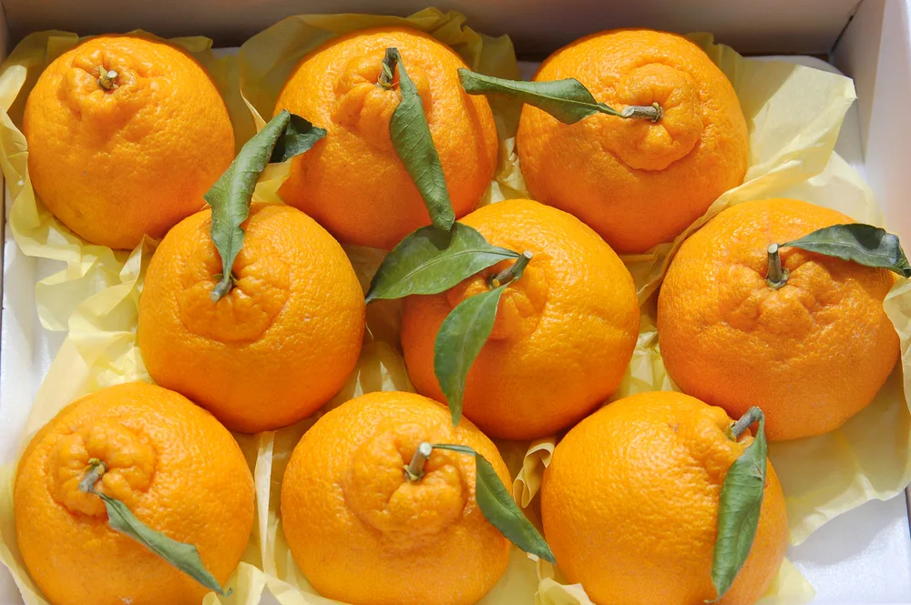
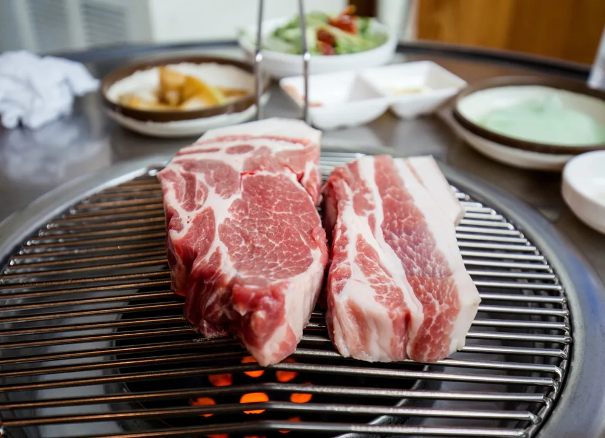
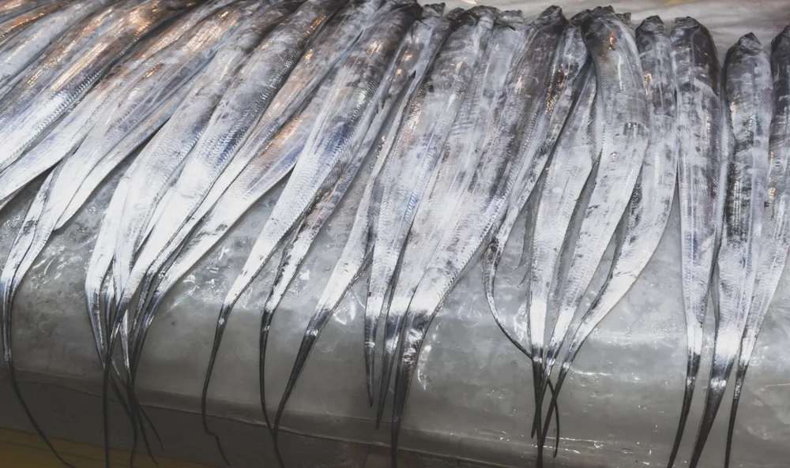
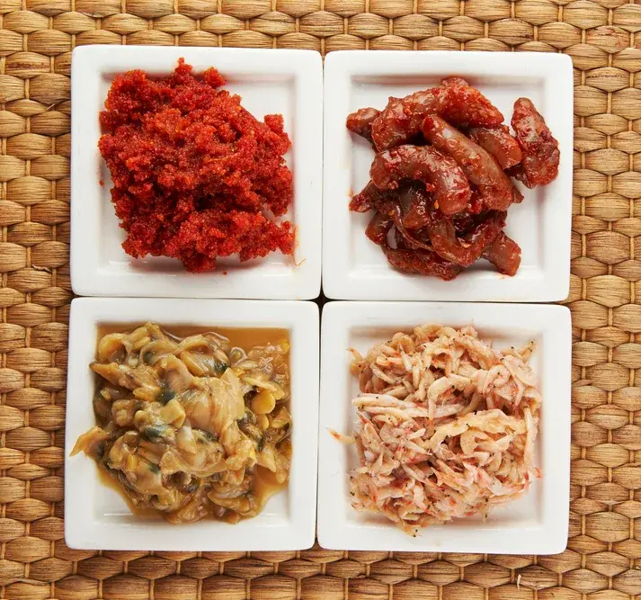

제주여행이야기

제주 넷제로 드라이빙 코스



| 일 | 월 | 화 | 수 | 목 | 금 | 토 |
|---|---|---|---|---|---|---|
| 1 2026년 개기월식(정월대보름) 특별관측회(시작) |
2 2026 국립제주박물관 설맞이 행사(끝) |
3 창극 배비장전 2026년 개기월식(정월대보름) 특별관측회(끝) |
4 | 5 | 6 | 7 |
| 8 2026 감귤나라 세포들(끝) |
9 2026 제주들불축제(시작) |
10 | 11 | 12 | 13 | 14 뮤지컬 빈센트 반 고흐 2026 제주들불축제(끝) |
| 15 | 16 | 17 | 18 | 19 | 20 | 21 |
| 22 | 23 | 24 | 25 | 26 | 27 보롬왓 튤립 축제(시작) |
28 소노 런트립 180K in JEJU(시작) 제28회 서귀포 유채꽃 국제걷기대회(시작) |
| 29 소노 런트립 180K in JEJU(끝) 제28회 서귀포 유채꽃 국제걷기대회(끝) |
30 | 31 |



